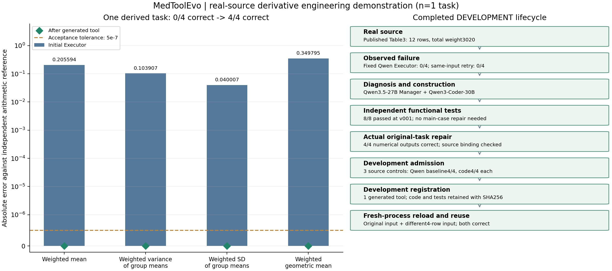

北京时间2026-11-09 18:03:23，验收pass=true。
单个问题的4个数值，不是4道独立问题。 数值来自真实论文Table3的12组数据；问题、数学定义及验收规则为研究者构造。不计入BioASQ正式结果。语义Qwen3.5-27B；代码Qwen3-Coder-30B。

源码初版8/8，无需代码修复；自动修复组件另有真实2/7→一次自动修复→7/7记录，分别核算。
| 指标 | 初始Executor | 同证据重试 | 工具后 | 独立参考值 |
|---|---|---|---|---|
| 加权均值 | 9.066327 | 9.066327 | 9.271921 | 9.271921 |
| 组均值的加权总体方差 | 1.634854 | 1.634854 | 1.738761 | 1.738761 |
| 组均值的加权总体标准差 | 1.278614 | 1.278614 | 1.318621 | 1.318621 |
| 加权几何均值 | 8.837862 | 8.837862 | 9.187657 | 9.187657 |
绝对误差门槛5×10⁻⁷。参考程序在离线验收中使用，未把参考结果交给初始解题器、Manager或Builder。
真实论文及Table3，DocHopQA条目9990附带原始表格快照。选取System/body location全部12行，权重合计3020。计算对象为给定组均值的数学汇总，不是患者层面的总体估计或原文结论。
人为设定派生问题、I/O、公式、精度、独立参考、控制及复用输入；未改写初始输出或手写候选代码。控制器触发复用。开发注册和正式稳定注册分别核算，100题与全量门槛未变。